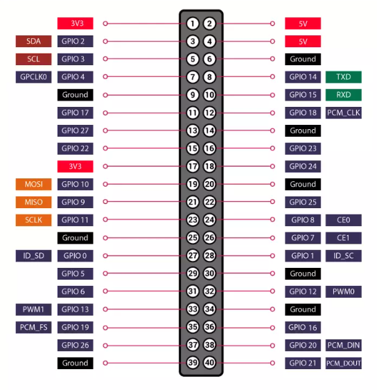

Contrôle pin
Pin / mode
Sur Raspberry Pi OS récent, le backend peut utiliser
pinctrl (plus robuste que l'ancien sysfs). Sur Windows : mode simulation / non supporté.PWM logiciel
Input / sampling
Les événements
sample sont envoyés en live via websocket.Pin--
Value--
Mode--
PWM--
Sampling--
Last sample--
error: --
Mini analyseur logiciel
Canaux surveillés
Analyseur logiciel user-space : adapté à des signaux lents/modérés, pas à un vrai analyseur logique matériel.
Traces (fenêtre 10 s)
Pinout Raspberry Pi (40 pins)

Exemple : GPIO17 = BCM17 = pin physique 11 sur le header.